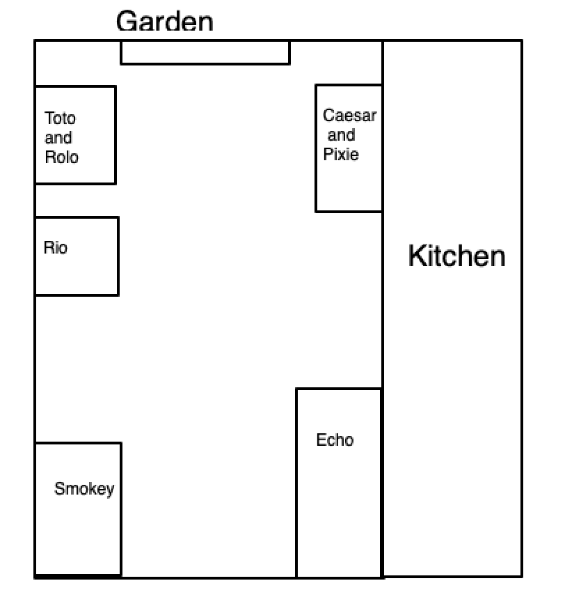
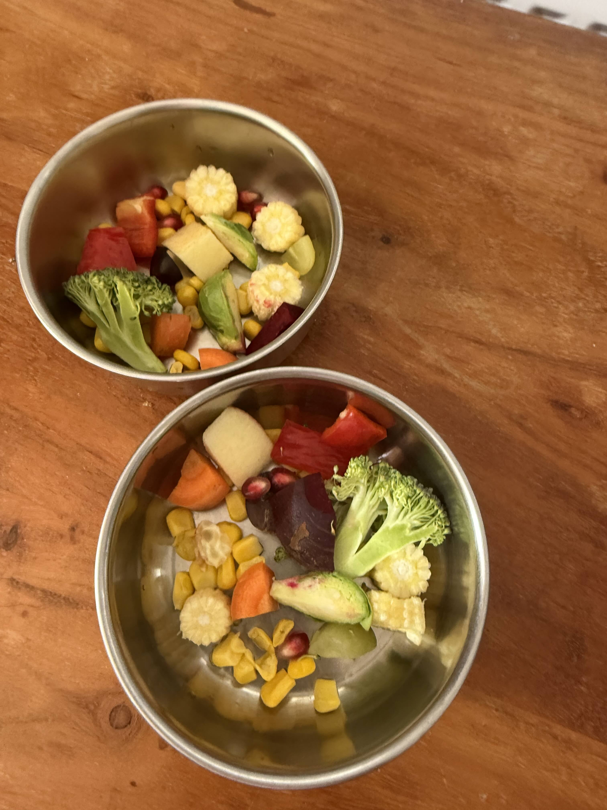

There are 5 Green-Cheeked conures and 2 African Greys.
Green-Cheeked Conures:
Rio (cage on his own)
Rolo and Toto (next to Rio) – Toto has yellow on his belly
Caesar and Pixie – Pixie has yellow on her belly
African Greys:
Echo (biggest cage)
Smokey

Feeding Schedule:
They all have an unlimited amount of pellets in their pens. If these run out, get very low or are mostly just ground up, top them up.
Rio tends to make his a bit gross by mushing up fresh food in there. If it gets gross, remove and discard it.
The conures eat Harrisons Lifetime Fine pellets - they're the tiny balls in the clear container.
Smokey and Echo eat Harrisons High Potency Coarse.
Morning routine:
Remove food bowls
Remove Smokey's water bowl and Caesar and Pixie's water bowl (there are no spares).
Wash bowls
Replace water and change newspaper. Use as many sheets as you like - the more the better. Best to unfold it so that it's completely flat (not one sheet in half like the newspaper is delivered).
While bowls are drying, offer toast:
Toto's piece goes into the bowl on the cage door as he is missing a nail and can't hold things with his feet.
I always keep some toast in the little pink tupperware ready for bribing Smokey :D
Once bowls are dry, provide fresh fruit and vegetables (washed in a sieve). As a rough guide:
7 sugar snap peas
3 slices of carrot
About half a tin of sweetcorn. I rinse any sweetcorn in an open tin daily
2 baby corns
2 big slices of pepper
A thick slice of beetroot
Broccoli
Pomegranate seeds (4 each for conures, 8 each for greys)
6 grapes (half each for small birds)
Optional: apple or other fruit
This is a rough idea! They can have more or different amounts.

If you need to change Smokey's pellet dish, give him a piece of toast or a walnut. He will then let you get his pellet dish out through the water bowl door. If you feel at all uncomfortable doing this (or any other pellet bowl) just put the pellets in with his fruit and veg.
Evening feeding (~5pm):
Conures get a Nutriberry. Toto can't hold food with his foot, so his is placed into the pellet dish on the door (I open the cage to do this). I normally give Rolo (the bird without yellow) a nutriberry while the door is open. She should take it from you.
Greys get seeds:
Echo: very small amount from two seed bags (one clear, one white paper).
Smokey: larger amount from the white paper bag.
Evening routine:
Shut dark blue blinds on French doors and between dining room and kitchen (between 6–8pm). You can also shut the curtains - it will stop them waking you up in the morning.
Bribery
All birds can be bribed! Use what helps. Tips:
All conures like safflower seeds
Caesar: bribed with toast or nutriberries (give Pixie some too).
Smokey: bribed with toast.
Echo: toast, walnuts, grapes.
To get birds back into their pen, show their favorite food going into it.
Rolo and Toto: best lured back with safflower seeds, toast, or nutriberries.
Caesar, Pixie, and Rio: bribed with all of the above.
Important: Do not let conures from different cages out at the same time—they will fight!
Nesting
At the moment, the conures are obsessed with nesting. Don't let Caesar and Pixie into the living room as Caesar thinks he's found a nest there and is likely to fly at you if he goes in there.
Individual Bird Notes
Caesar
Caesar is 10 years old. He is very confident and quite defensive of his cage. He’ll sneak out if you leave any food bowl doors open! Bribe him all you want as he is nippy. Caesar will fight with Toto and Rio. He’s obsessed with finding a nest right now so if he’s out he’ll probably start going under blankets. He'll step up if you offer him a seed.
Pixie
Pixie is 5 years old. If she does a big fly around and seems to be making funny breathing noises, don’t worry, as long as it settles back down again when she’s not out of breath. She has some damage in one of her nostrils from an infection she had when she was very small. Pixie is quite flighty but very sweet and will likely fly onto you! Pixie will fight with Toto and Rio. She'll step up without biting.
Rolo
Rolo is 8 years old. She is not very hand tame but may sit on your head or will fly onto your hand for a pile of seeds. She likes to follow Toto around.
Toto
Toto is 7 years old. He is quite confident but probably won’t step up, though he will fly onto your hand for seeds and he may fly onto your shoulder. He is also obsessed with making a nest, so will do similar things to Caesar! Toto is an escape artist: he was actually a found bird. He will sneak out of any food door. Toto will fight with Caesar, Pixie and Rio. He is missing a nail and can't hold food with his feet.
Rio
Rio is 12 years old. He is very confident and an absolute snuggle bug. He will nip you though if he doesn't want to do something or if he doesn't like what you're doing. He's easily bribed and will do most things for a seed or a grape. He likes to play with the cat balls. He loves to sing and ask you 'what you doin?'.
Echo
Echo is 10 years old. She does pluck and barber her feathers. She is very sweet but can be spunky. She is quite destructive so keep her off the curtain rail in the living room, the cooker hood and off the kitchen door where possible as she will chew things! It's probably easier to keep the blind shut between the dining room and the kitchen.
Smokey
Smokey is over 40 years old. He is absolutely hilarious but very cage defensive and unpredictable when out so keep him in his cage. If you have issues, bribe him with toast. He loves to whistle and dance with you! I've been teaching him 'if you're happy and you know it'.
General
Be mindful of open doors/windows when birds are out.
Vet: Valley Veterinary Hospital 029 2000 1454.
Keysafe available if locked out.
Help yourself to food/drinks—just let me know what needs replacing.
Heating: Hive on living room fireplace. It doesn't happen often, but if it doesn't work, remove and reinsert the batteries.
Water stop tap & fuse box: behind the fridge.
Most downstairs lights are Hue. They have white switches. Cycle through colors/dimming with their special switches (white rectangular ones). OK if turned off at wall switch.
TV: Prime/Netflix/Disney Plus available. Firestick in living room with lots of channels on - select 'Evolution TV'.
No need to be here all the time. Just feed birds. Train station: Fairwater.
Hot water: don't need to do anything special. The tap will run hot after a short time for washing up/baths/showers.
Wi-Fi router: white cylinder on shelves left of living room TV.
You're welcome to do laundry. No tumble dryer — use airer or washing line.
Kitchen: microwave, hob/oven, slow cooker, air fryer (some items in pantry - carry on past kitchen, on left). Please use silicone/plastic only in pans (no metal).
Don't hesitate to get in touch while I'm away if you have any questions whatsoever :)